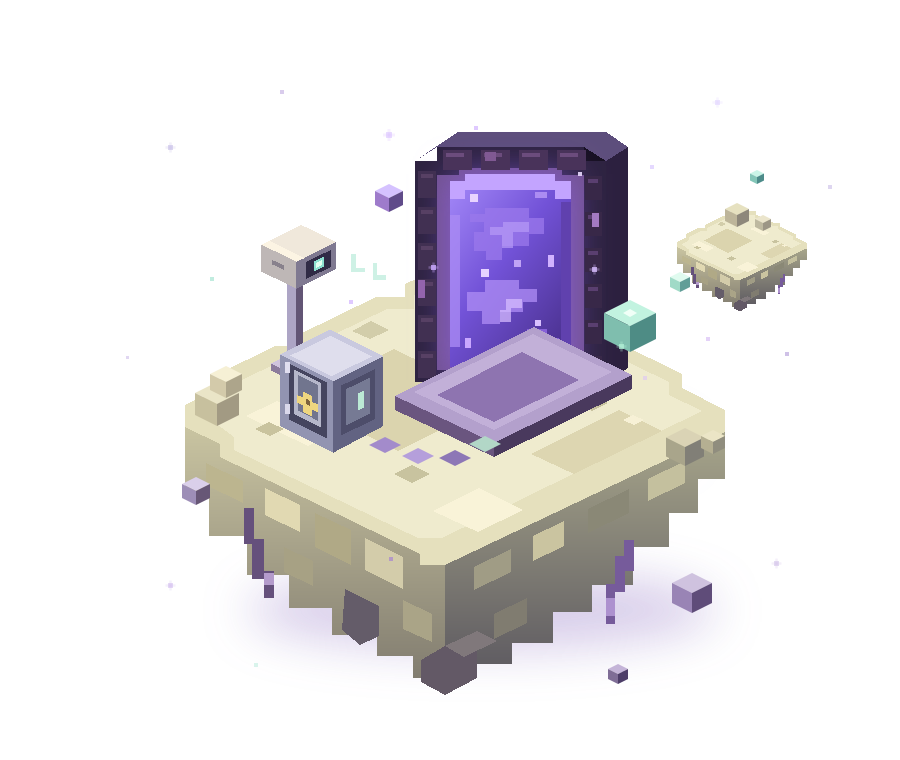
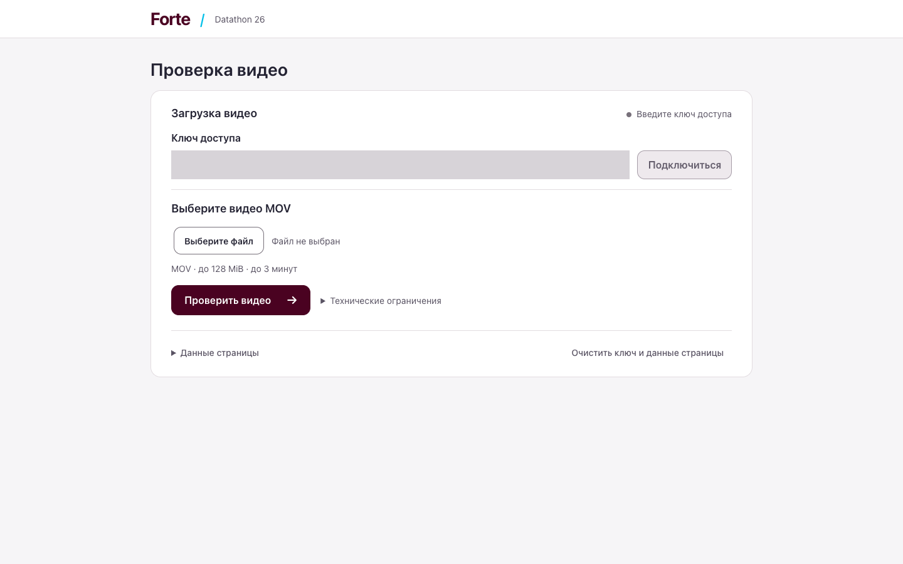
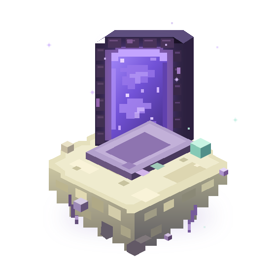

DETECTION
86%
FORTEBANK / DATATHON ’26
Находим признаки возможных нарушений в кассовом видео. Показываем время, кадр и основание для проверки.

01 — МИССИЯ
Проверяющему нужен не только сигнал. Нужен фрагмент, который можно увидеть, понять и проверить.
MOV через сайт или API.
Без ручного запуска кода.
Видимое действие или состояние.
Одно видео — несколько
эпизодов.
Таймкод, описание
и кадры-доказательства.
Документ и пункт.
Решение проверяет человек.
Меньше поиска по записи.
Больше внимания к конкретному эпизоду.
02 — ВНУТРИ ДВИЖКА
Детекция объектов, интерпретация сцены и дополнительные проверки работают в одном pipeline.
Контекст сцены
и описание события
Тип · время · описание
кадр · нормативная ссылка
Локальные веса. Собственный сервис. Без сторонних AI API при анализе.Подтверждено ML-командой; схема показывает роли компонентов.
03 — РЕЗУЛЬТАТЫ
Один сгенерированный
MOV длительностью 3 секунды.
86% Detection и 80% Classification сообщены ML-командой. Размер выборки, определение метрик и независимость оценки уточняются. 2,65 с — измерение одного короткого синтетического теста, не среднее время банковских видео и не подтверждение SLA.
04 — РАБОЧИЙ ПРОДУКТ
Один адрес для сайта и API. Понятный статус и результат без ручного запуска ноутбука.

Настоящий интерфейс. Без приватных банковских данных.
Screenshots публичной проверки на синтетическом видео.
Кнопки
переключают примеры, не запускают новый анализ.
05 — МОЖНО ПРОВЕРИТЬ
Возможное событие сопровождается источником. Применимость нормы проверяется по обстоятельствам, а не по одному названию класса.
Пункты сверены командой. Условия применения оцениваются для каждого события.
Собственные веса и Qwen на инфраструктуре команды. Без передачи видео сторонним AI API.
Таймкод, полное описание и кадры помогают вернуться к конкретному эпизоду.
Система показывает признаки возможного нарушения. Она не устанавливает вину.
06 — СОБРАНО КОМАНДОЙ
Мы соединяем машинное зрение,
доказательства и удобный
продукт.
Не просто найти событие.
Оставить проверяемый след.

← → — разделы · пробел — далее · Esc — выйти